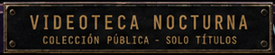

Tu referencia

No identificamos la fuente exacta sólo con este recorte. Comparamos el mismo texto para juzgar proporción y ritmo.
Oswald 400 · más sobria
VIDEOTECA NOCTURNACOLECCIÓN PÚBLICA - SOLO TÍTULOS
DISPONIBLE ESTA NOCHE6 TÍTULOS
Más abierta y menos condensada. Alternativa si preferís una placa de lectura más tranquila.
Bebas Neue · recomendada
VIDEOTECA NOCTURNACOLECCIÓN PÚBLICA - SOLO TÍTULOS
DISPONIBLE ESTA NOCHE6 TÍTULOS
Alta, estrecha y regular. Se acerca al carácter de la referencia sin imitar desgaste en las letras.